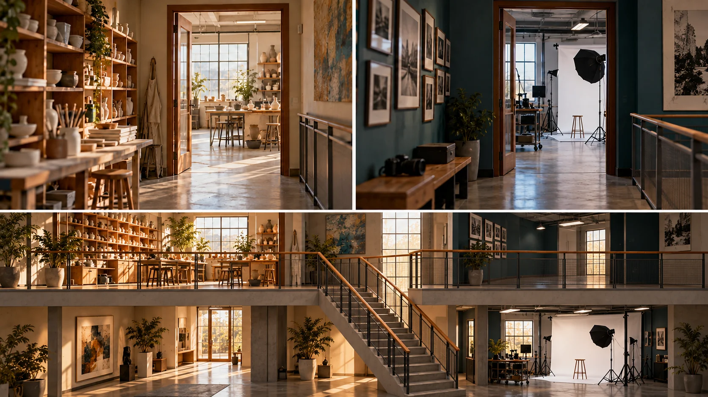

P23 · 고급 · 제작·활용
UAL: 여러 비행을 하나의 공간 경험으로 편집하기
여러 구간의 끝과 시작에 필요한 시각 단서를 정하고 공간 연결을 판정한다.
그림에서 확인할 세 가지연속으로 보이는 경험과 한 번의 촬영을 구분한다.
1위층의 도자 작업 공간
그림의 위층에서 작업대와 도자 관련 사물을 찾는다. 문과 복도만 이어지는 투어가 아니라 공간의 기능을 읽을 단서가 있는지 본다.
2아래층의 사진 공간
아래층 사진 작업 공간의 장비와 배치를 비교한다. 위층과 다른 기능이 보이면서도 같은 건물로 읽히는 공통 요소를 찾는다.
3공통으로 보이는 문틀
위쪽 두 화면에서 나무 문틀과 복도 난간을 비교한다. 비슷한 문틀 너머에 도자기와 사진 장비라는 다른 단서가 나타나는지 찾아본다.
촬영 설계
촬영을 이렇게 설계한다
층별 설명 단위 나누기
교육 제안: 건물 전체를 한 경로로 외우기보다 각 층에서 반드시 보여줄 기능과 도착점을 정한다. 이동 가능한 길과 공간의 성격을 잘 설명하는 길이 같은지 따로 비교한다.
끝과 시작 단서 설계
교육 제안: 앞 구간의 끝과 다음 구간의 시작에서 문틀·진행 방향·밝기의 관계를 비교한다. 같은 층처럼 속이기보다 공간 전환이 이해되도록 필요한 안내를 함께 정한다.
연속성과 정보량 검토
교육 제안: 연결이 매끈해도 방의 기능을 읽기 전에 지나가면 속도나 머무는 시간을 조정한다. 긴 본편과 짧은 파생본에 같은 이동 길이가 필요한지도 별도로 검토한다.
UAL 패션 대학의 층별 FPV 촬영을 이어 하나의 긴 투어 영상으로 편집했다.
원본 영상UAL: 여러 비행을 하나의 공간 경험으로 편집하기
1. 공간 기능의 인지
방에 들어갈 때 용도를 알려주는 물체가 얼마나 빨리 보이는지 관찰한다. 이동의 매끄러움과 별도로 공간 기능을 이해할 시간을 판단한다.
2. 층의 구분
원본에서 층이나 공간이 바뀌는 순간의 단서를 찾는다. 비슷한 문과 복도 때문에 같은 공간을 반복한다고 오해할 구간이 있는지 살핀다.
3. 연속의 근거
원본에서 공간이 바뀌는 순간을 관찰하되 모든 연결 지점을 찾았다고 주장하지 않는다. 연속 경험과 실제 단일 촬영을 구분한다.
재생이 제한되면 원본 영상 새 창을 이용하세요.
제작진 설명 · 한국어 요약 번역
층별 경로 계획과 현장 조율
공사 대상
원문 요약 번역: 시공사 Portview의 인테리어 공사 범위를 보여주기 위한 영상이라고 설명한다.
경로 계획
대상은 런던 스트랫퍼드의 15층 건물이며 모든 층을 FPV로 촬영했다.
경로는 편집에서 깔끔하게 이어지도록 층별로 계획했다고 한다.
현장 조율
현장 출입과 안전 교육은 Portview와 조율했고 외부 비행은 여러 이해관계자와 협의했다.
제작진 설명 · 한국어 요약 번역
실내 장비와 납품 구성
장비 선택
원문 요약 번역: 실내에는 좁은 공간용 CineWhoop인 GEPRC CineLog 25를 썼다고 적혀 있다.
납품 구성
건물 외부 전경은 일반 드론의 설정 샷으로 따로 촬영했다.
층별 비행을 이어 7분 44초의 한 편으로 편집했고 짧은 소셜용 편집본과 발표용 컷도 만들었다.
미공개 연결
어떤 문틀이나 가림으로 층을 이었는지는 본문에 없다.
그 연결 예시는 교육 제안이다.
Kling 프롬프트단문 인과 체인 · 16:9
내가 직접 만들어 본다
같은 문틀을 앞 구간의 끝과 다음 구간의 시작 단서로 삼아 층과 기능이 바뀌는 순서를 지시한다.
- S01큰 건물 위층에 도자 작업실이 있다.
- S02영상은 하나의 연속 쇼트다.
- S03화면에 드론 기체는 나오지 않는다.
- S04처음 10초 동안 카메라는 작업대와 도자기를 천천히 지나간다.
- S05도자기가 보이기 때문에 이 방의 기능이 읽힌다.
- S06카메라는 나무 문틀을 향해 곧게 나아간다.
- S07문틀이 화면을 감싸며 가까워진다.
- S08다음 10초 동안 카메라는 문틀을 통과해 복도로 나간다.
- S09카메라는 복도 난간을 따라 아래층으로 내려간다.
- S10내려가는 방향이 이어지기 때문에 층이 바뀐 것이 이해된다.
- S11마지막 10초 동안 아래층에도 같은 나무 문틀이 나타난다.
- S12카메라가 문틀을 통과하자 사진 작업 공간이 열린다.
- S13사진 장비가 보이면서 방의 기능이 달라진다.
- S14같은 문틀이 두 방을 같은 건물로 묶는다.
[네거티브]
- 위층이 아니라 지붕이나 야외가 나오는 것 금지
- 중간에 컷이 들어가 비행이 끊기는 것 금지
- 화면에 드론 기체가 나타나는 것 금지
- 작업대와 도자기가 화면에서 빠지는 것 금지
- 도자기 대신 알 수 없는 물건만 보이는 것 금지
- 카메라가 문틀을 벗어나 벽으로 향하는 것 금지
- 문틀이 화면 밖에 있어 안 보이는 것 금지
- 문틀 앞에서 카메라가 막혀 멈추는 것 금지
- 난간 없이 아래층으로 순간이동하는 것 금지
- 내려가는 방향이 뒤바뀌어 층이 헷갈리는 것 금지
- 아래층에 전혀 다른 모양의 문이 나오는 것 금지
- 문틀을 통과해도 같은 방이 이어지는 것 금지
- 사진 장비 대신 도자기가 그대로 보이는 것 금지
- 두 방이 서로 다른 건물처럼 보이는 것 금지
결과에서 볼 것
- 문틀이 두 공간을 잇는 단서로 보였는가
- 도자 공간과 사진 공간의 기능이 구분되었는가
- 층이 바뀐 것이 컷 없이 이해되었는가